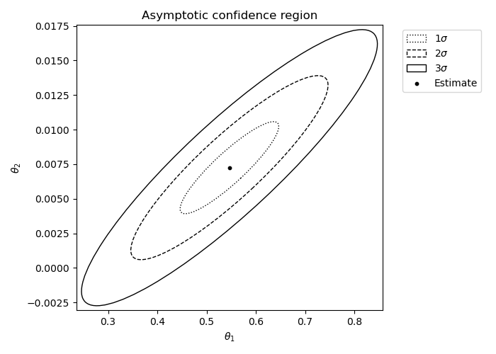

Parameter Estimation¶
The BirDePy function birdepy.estimate() contains implementations of four popular parameter estimation frameworks.
Two of these are based on maximising the likelihood of observed data either directly (birdepy.estimate(framework=’dnm’)) or using an expectation-maximisation algorithm (birdepy.estimate(framework=’em’)).
The package also includes implementations of least squares estimation (birdepy.estimate(framework=’lse’)) and approximate Bayesian computation (birdepy.estimate(framework=’abc’)).
The frameworks are briefly described on this page.
It is assumed that the data consists of \(m\) sample paths of \(Z\) each with observations at specified times \(t_{0,k} < t_{1,k} < \dots < t_{n_k,k}\) for \(k\in(1,\dots, m)\).
Sample times are passed to BirDePy as a list t_data of lists where sublists \(k\in(1,2,\dots, m)\) corresponds to observations times for list \(k\).
Similarly, population observations p_data are also passed as a list of lists with populations at the corresponding observations times.
If only one sample path is observed, then the outer list is not necessary.
On this page denote the population observed at time \(t_{i,j}\) as \(z_{i,j}\) and the time between observations by \(\Delta_{i,j} = t_{i,j} - t_{i-1,j}\).
The collection of all the observations and their times is written \(\boldsymbol z\).
Let \(p_{i,j}(t;\boldsymbol\theta) = \mathbb P(Z(t)=j \mid Z(0)=i)\).
To obtain parameter estimates in BirDePy simply call birdepy.estimate() (after importing BirDePy). For example, to estimate the parameters of the ‘Ricker’ model from yearly population census data corresponding to black robin females on the Chatham Islands who survived up to at least 1 year in the years 1972 to 1998:
import birdepy as bd
t_data = list(range(1972, 1999, 1))
p_data = [1, 1, 1, 1, 1, 1, 1, 2, 3, 4, 6, 6, 9, 11, 15, 17, 27, 37, 44, 44,
44, 62, 60, 70, 75, 79, 86]
est = bd.estimate(t_data, p_data, [2]*4, [[0,10], [0,10],[0,10], [0.5, 10]],
model='Ricker', se_type='asymptotic')
print('Parameter estimates are', est.p,
'. \nThe standard errors of these estimates are', est.se,
'. \nThe carrying capacity is estimated as ', est.capacity[1],'.')
Which displays:
Parameter estimates are [0.3878995609084285, 0.12357106533023712, 0.010995524807027462, 1.7121790781632777] .
The standard errors of these estimates are [0.09980387 0.05682818 0.00267044 1.26765449] .
The carrying capacity is estimated as 98.37671193540476 .
Note that in this analysis we put p0=[2]*4 as an initial guess for the parameters and p_bounds=[[0,10], [0,10], [0,10], [0.5,10]] as a reasonable space for the parameters to be estimated from.
Direct Numerical Maximization¶
A popular parameter estimation framework involves finding the parameters \(\boldsymbol\theta^\star\) that maximize the probability of the data \(\boldsymbol z\) under the assumed model. This approach, known as maximum-likelihood-estimation (MLE), therefore aims to find the parameters that maximize the likelihood function \(\ell(\boldsymbol z;\boldsymbol \theta)\). That is,
In BirDePy approximations to \(\ell(\boldsymbol z;\boldsymbol \theta)\) can be found using the approximations to \(p_{i,j}(t;\boldsymbol\theta)\) discussed on the Transition Probabilities page. These approximations are then numerically maximised to obtain estimates.
See birdepy.estimate(framework=’dnm’) for the implementation of this method in BirDePy.
Expectation Maximization¶
Another way to find maximum likelihood estimates is to treat each unobserved path of \(Z\) between times \(t_{i-1,k}\) and \(t_{i,k}\) as ‘missing data’, and use the EM algorithm of [Dempster1977]. The EM algorithm is an iterative procedure where each iteration consists of an ‘E-step’ and an ‘M-step’. The ‘E-step’ is concerned with the computation of the expected value of the log-likelihood function for continuously-observed PSDBDPs, conditional on the current iteration’s parameter estimate \(\boldsymbol \theta\) and on the discretely-observed data \(\boldsymbol z\). In the ‘M-step’, this expectation is then maximized to obtain a new parameter estimate.
The log-likelihood function for continuously observed PSDBDPs depends only on the sufficient statistics \(U_z\), \(D_z\) and \(H_z\), which respectively represent the number of births and deaths whilst in state \(z\) and the total cumulative time spent in state \(z\). Given a pair of observations \(Z(0)=i\) and \(Z(t)=j\) of a birth-and-death process, it is well known that
\[\begin{split}u_{z;i;j}(t; \boldsymbol\theta) &:= \mathbb E[U_z \mid Z(0) = i, Z(t) = j] = \frac{\int_0^t~p_{i,z}(s)~\lambda_z~p_{z+1,j}(t-s) d s}{p_{i,j}(t)},\\ %% d_{z;i;j}(t; \boldsymbol\theta) &:= \mathbb E[D_z \mid Z(0) = i, Z(t) = j] = \frac{\int_0^{t}~p_{i,z}(s)~\mu_z~p_{z-1,j}(t-s)d s}{p_{i,j}(t)},\\ %% h_{z;i;j}(t; \boldsymbol\theta) &:= \mathbb E[H_z \mid Z(0) = i, Z(t) = j] = \frac{\int_0^{t}~p_{i,z}(s)~p_{z,j}(t-s)d s}{p_{i,j}(t)},\end{split}\]
where \(\lambda_z\), \(\mu_z\) and \(p_{i,j}(t)\) implicitly depend on \(\boldsymbol\theta\). The conditional expected value of the log-likelihood function for continuously-observed PSDBDPs is
\[\begin{split}f(\boldsymbol \theta',~\boldsymbol \theta) &= \mathbb E[\tilde\ell(\boldsymbol y;\boldsymbol \theta')\mid\boldsymbol z, \boldsymbol \theta]\\ &= \sum_{k=1}^m\sum_{i=1}^{n_k}\sum_{z=0}^\infty \Big\{u_{z;z_{i-1,k};z_{i,k}}(\Delta_{i,k}; \boldsymbol\theta)\log(\lambda_z(\boldsymbol\theta'))+ d_{z;z_{i-1,k};z_{i,k}}(\Delta_{i,k};\boldsymbol\theta)\log(\mu_z(\boldsymbol\theta')) -\big(\lambda_z(\boldsymbol\theta')+\mu_z(\boldsymbol\theta')\big)h_{z;z_{i-1,k};z_{i,k}}(\Delta_{i,k};\boldsymbol\theta) \Big\}.\end{split}\]
Starting with an arbitrary vector \(\boldsymbol \theta^{(0)}\), an EM algorithm estimate follows from repeating \(\boldsymbol \theta^{(k+1)} = \text{argmax}_{\boldsymbol\theta'} f(\boldsymbol \theta',~\boldsymbol \theta^{(k)})\), until \(|\boldsymbol \theta^{(k+1)}-\boldsymbol \theta^{(k)}|\) is small or a maximum number of iterations has taken place.
See birdepy.estimate(framework=’em’) for the implementation of this method in birdepy.estimate().
The implementation has two important options technique and accelerator.
Expectation Step Techniques¶
The integrals displayed above need to be computed in order to use the EM algorithm just described. A first possible way to do this is to simply use any of the methods from the Transition Probabilities page to evaluate the transition probability functions \(p_{i,j}(t)\), and then compute the integrals numerically using, for example, the trapezoidal rule. Upon choosing to compute \(p_{i,j}(t)\) using the matrix exponential method or the inverse Laplace transform method, more sophisticated approaches are available, as we briefly describe in the next two paragraphs.
Recalling \(P(t)= \exp(Qt)\) (which requires numerical approximation), upon defining \(\boldsymbol e_i\) as the \(i\)-th basis vector in \((|\mathcal S|+1)\)-dimensional euclidean space, for any \(a,b,i,j\in\mathcal S\), we can write
\[\int_0^t p_{i,a}(s) ~p_{b,j}(t-s) d s = \boldsymbol e_{i} \int_0^t \exp(Qs) ~\boldsymbol e_{a}^\top\boldsymbol e_{b}~ \exp(Q(t-s)) d s\, \boldsymbol e_{j}^\top.\]
Let \(G(t) = \int_0^t \exp(Qs) ~\boldsymbol e_{a}^\top\boldsymbol e_{b}~ \exp(Q(t-s)) d s\). According to [vanLoan1978], if
\[\begin{split}C := \begin{bmatrix} Q & \boldsymbol e_{a}^\top \boldsymbol e_{b}\\ 0 & Q \end{bmatrix},\end{split}\]
then
\[\begin{split} \exp(Ct) = \begin{bmatrix} \cdot & G(t)\\ \cdot & \cdot \end{bmatrix},\end{split}\]
where ‘\(\cdot\)’ denotes parts of the matrix that can be discarded. Hence the integrals can be computed by extracting the relevant parts of the matrix exponential \(\exp(Ct)\).
On the other hand, if \(\mathcal L^{-1}\) denotes the inverse of a Laplace transform \(\mathcal L\), then we also have
\[\int_0^{t}~p_{i,a}(s)~p_{b,j}(t-s) d s = \mathcal L^{-1}[f_{i,a}(s)~f_{b,j}(s)](t)\]
by the properties of Laplace transforms. Numerical Laplace transform inversion therefore provides a third technique for evaluating the integrals. This approach is discussed by [CrawfordEtAl2014].
The technique option of birdepy.estimate(framework=’em’) can be used to switch between these alternative methods.
Acceleration¶
The EM algorithm can exhibit slow convergence, calling for many iterations before a suitably accurate estimate is provided. Each iteration may itself use substantial computational time and effort due to requiring many matrix exponential computations, Laplace transform inversions, or numerical integration computations. To mitigate this, several schemes have been developed to accelerate the convergence rate of EM algorithms. In [JamshidianJennrich1997], four such schemes are described in detail. Using optimization-based ideas, these accelerators can yield substantial improvements in computational speed. Recall \(f\), the surrogate likelihood function, and let \(\tilde {\boldsymbol g}(\boldsymbol\theta) = \big[\text{argmax}_{\boldsymbol\theta'} f(\boldsymbol \theta', \boldsymbol \theta)\big] - \boldsymbol \theta\), which is the change in parameter values when a non-accelerated EM iteration is performed. Loosely speaking, EM acceleration techniques treat \(\tilde {\boldsymbol g}\) as a generalized derivative of the likelihood function and aim to find \(\boldsymbol \theta^\star\) such that \(\tilde {\boldsymbol g}(\boldsymbol\theta^\star) = \boldsymbol 0\).
The accelerator option of birdepy.estimate(framework=’em’) can be used to switch between these alternative methods.
Least Squares Estimation¶
Let \(m_{i}(t;\boldsymbol \theta) = \mathbb E_{\boldsymbol\theta}[Z(t) \mid Z(0) = i]\) correspond to the expected movement of \(Z\) with parameters \(\boldsymbol\theta\) from state \(i\) in elapsed time \(t\). Another approach to parameter estimation follows from choosing the parameter values \(\boldsymbol\theta^\dagger\) that minimizes the sum of the squared differences \(S(\boldsymbol z;\boldsymbol \theta)\) between the expected transition from \(z_{i-1,j}\) in time \(\Delta_{i,j}\) with the observed transitions \(z_{i,j}\). That is,
In birdepy.estimate() approximations to \(m_{z_{i-1,j}}(\Delta_{i,j};\boldsymbol \theta)\) are found using the matrix exponential, by using the mean associated with the diffusion approximation, and by assuming a linear birth-and-death process approximation.
These approaches are specified by setting the argument of the kwarg squares respectively to ‘expm’, ‘fm’, and ‘gwa’.
See birdepy.estimate(framework=’lse’) for the implementation of this method in BirDePy.
Approximate Bayesian Computation¶
The methods discussed so far have relied on using approximations to model properties which have no explicit expression (specifically, the likelihood of the observed data, and the expectation of the population size). ABC bypasses the need to use these model properties in the first place. This method works by repeatedly comparing simulated data with the observed data to find an approximation to a distribution that characterizes uncertainty about the value of \(\boldsymbol\theta\) (called the posterior distribution). Given a distance measure \(d\), the standard ABC method (as proposed in [PritchardEtAl1999]) consists of repeating the following steps:
Generate a parameter proposal \(\boldsymbol \theta\) from the prior distribution \(\pi\).
Simulate observations \(\hat{\boldsymbol z}(\boldsymbol \theta)\) consisting of points \(\hat{z}_{i,k}\) generated using \(\boldsymbol\theta\) with initial conditions \(z_{i-1,k}\) and elapsed times \(\Delta_{i,k}\) (for \(k=1,\ldots,m\), \(i=1,\ldots,n_k\)).
Accept \(\boldsymbol \theta\) as an approximate observation from the posterior distribution if \(d\big(\boldsymbol z, \hat{\boldsymbol z}(\boldsymbol \theta)\big) < \epsilon\), where \(\boldsymbol z\) is the observed data and \(\epsilon\) is a predetermined error tolerance threshold.
These steps are repeated until an arbitrarily large number of parameter proposals are accepted. A potentially suitable choice of \(d\) is:
\[d(\boldsymbol z, \hat{\boldsymbol z}) = \sqrt{\sum_{k=1}^m\sum_{i=1}^{n_k} \big(z_{i,k}-\hat{z}_{i,k}(\boldsymbol \theta)\big)^2}.\]
The prior \(\pi\) can simply be taken as a uniform distribution on the set of allowed parameters.
The choice of threshold \(\epsilon\) in Step~3 above has a strong influence on the probability of a parameter proposal being accepted. Larger choices of \(\epsilon\) may allow the desired number of accepted parameter proposals to be found more quickly, but this could be at the expense of accuracy. Similarly, the choice of the prior distribution \(\pi\) has a major impact on performance. To address these concerns, the standard ABC method can be applied iteratively with dynamically determined \(\epsilon\) and \(\pi\). In [SimolaEtAl2021] a method for adaptively selecting a threshold at each iteration by comparing the estimated posterior from the two previous iterations and the distances between the sampled data and the accepted parameter proposals in the previous iteration is proposed.
See below for instructions on how to use a customized distance function. The prior \(\pi(\cdot)\) is taken to be a uniform distribution on the set of parameters satisfying the arguments of p_bounds and con.
Customized Distance¶
The kwarg distance can be used to specify an alternative form for the distance function \(d\). To do this a callable must be specified that takes as input a value of epsilon and a list of pairs \([z_{i,j}, \hat{z_{i,j}}(\boldsymbol \theta)]\) and returns a scalar. For example, to specify
as a custom distance, first define a callable representing the distance:
def custom_distance(eps, data_pairs):
data_pairs = np.array(data_pairs)
dist = np.sqrt(np.sum(np.abs(data_pairs[:, 0] - data_pairs[:, 1])) / data_pairs.shape[0]) - eps
return dist
Then call birdepy.estimate(framework=’abc’) with distance utilizing the callable:
bd.estimate(t_data, p_data, p0, p_bounds, framework='abc', distance=custom_distance)
Known Parameters¶
It may be the case that some of the parameters of a model are already known.
In this case the kwargs known_p and idx_known_p can be passed to birdepy.estimate().
The kwarg known_p is an ordered list of of known parameter values and idx_known_p is an ordered list containing the indices of the known parameters as they would be in the argument to param in the function birdepy.probability().
For built-in models the indices of parameters corresponds to the canonical order they are given here.
For example, suppose that it is already known that the death rate the analysis conducted above is 0.25. Then instead do this:
import birdepy as bd
t_data = [t for t in range(1972, 1999, 1)]
p_data = [1, 1, 1, 1, 1, 1, 1, 2, 3, 4, 6, 6, 9, 11, 15, 17, 27, 37, 44, 44,
44, 62, 60, 70, 75, 79, 86]
est = bd.estimate(t_data, p_data, [2]*3, [[0,10], [0,10], [0.5, 10]],
model='Ricker', se_type='asymptotic', known_p=[0.25],
idx_known_p=[1])
print('Parameter estimates are', est.p,
'. \nThe standard errors of these estimates are', est.se,
'. \nThe carrying capacity is estimated as ', est.capacity[1],'.')
Which displays:
Parameter estimates are [0.49036967662220443, 0.009035150396231916, 1.9785349325654842] .
The standard errors of these estimates are [0.09762967 0.00296603 1.91677105] .
The carrying capacity is estimated as 90.64982307689301 .
Parameter Constraints¶
Constraints on parameters are passed to birdepy.estimate() through the kwarg con.
This is in addition to the bounds that are passed as the argument to p_bounds.
Constraints are ultimately used in scipy.optimize.minimize() or scipy.optimize.differential_evolution().
For optimization methods ‘SLSQP’ and ‘COBYLA’ constraints can be specified as a dictionary with fields:
- typestr
Constraint type: ‘eq’ for equality, ‘ineq’ for inequality.
- funcallable
The function defining the constraint.
- argssequence, optional
Extra arguments to be passed to the function.
Equality constraint means that the constraint function result is to be zero whereas inequality means that it is to be non-negative. Note that setting opt_method to ‘COBYLA’ means only inequality constraints are supported.
When there is only one constraint it can be passed as a dictionary. Where there are multiple constraints they must be passed as a list of dictionaries. When constraints are specified the default optimization routine is ‘SLQSP’.
For example to specify the constraint \(\gamma \ge \nu\):
import birdepy as bd
import numpy as np
t_data = [t for t in range(1972, 1999, 1)]
p_data = [1, 1, 1, 1, 1, 1, 1, 2, 3, 4, 6, 6, 9, 11, 15, 17, 27, 37, 44, 44,
44, 62, 60, 70, 75, 79, 86]
est = bd.estimate(t_data, p_data, [2]*4, [[0,10], [0,10], [0,10], [0.5, 10]],
model='Ricker', se_type='asymptotic',
con={'type': 'ineq', 'fun': lambda p: p[0]-p[1]})
print('Parameter estimates are', est.p, '. \nThe standard errors of these estimates are', est.se,'. \nThe carrying capacity is estimated as ', est.capacity[1],'.')
Which displays:
Parameter estimates are [4.549043705033482, 4.89126920630982e-09, 0.0019891584261715763, 0.50000001297632] .
The standard errors of these estimates are [3.59456242e-01 1.51703612e-06 3.22904617e-04 3.35752161e-02] .
The carrying capacity is estimated as 214388.4671765286 .
This parameter estimate does not match with the unconstrained estimate given at the beginning of this section, which is surprising since that estimate satisfies the constraints. Moreover the provided estimate does not seem to make much sense as the carrying capacity is estimated to be extremely high relative to the observed population sizes. In a later section we apply a global optimization algorithm to find the parameter estimates and see that this resolves the problem.
Note: It is better to use the known parameter functionality when constraining individual parameters to be equal to constants.
Confidence Regions¶
Attributes se and cov of the output can be used to quantify the uncertainty of parameter estimates.
Confidence regions can be computed by assuming a normal distribution with mean given by attribute p and covariance given by attribute cov.
Under this assumption standard errors are given by attribute se.
In addition, when one or two parameters are being estimated kwarg ci_plot can be set to True to enable plotting of confidence regions.
The method for computing a confidence region to quantify the uncertainty of parameter estimates depends on the framework being employed. Since computing a confidence region is closely related to computing standard errors, the argument of se_type determines which is applied.
For frameworks ‘dnm’ and ‘em’ a covariance matrix is returned as the negative of the inverse of the Hessian matrix of the approximate log-likelihood function at the point of the parameter estimate. This is returned as the attribute cov and can be used to characterize the uncertainty of the estimate given by attribute p.
The method simulated can be used for frameworks ‘dnm’, ‘em’ and ‘lse’. Given a parameter estimate \(\boldsymbol\theta^\star\), this approach proceeds by repeating the steps:
Simulate data \(\hat{\boldsymbol z}(\boldsymbol \theta)\) consisting of points \(\hat{z}_{i,j}(\boldsymbol \theta)\) generated using
birdepy.simulate.discrete()with the arguments of param, z0 and times set respectively to \(\boldsymbol\theta^\star\), \(z_{i-1,j}\) and \(\Delta_{i,j}\).Apply the same parameter estimation technique to find the estimate corresponding to \(\hat{\boldsymbol z}(\boldsymbol \theta)\)
These steps are repeated 100 times (or a different number of times as specified by kwarg num_bs_samples) and then a multivariate normal is fitted to the collection of estimates which is generated. From this a covariance matrix is returned as the attribute cov, which characterizes the uncertainty of the estimate given by attribute p.
For framework abc the attribute samples is returned which is a recording of the accepted parameter proposals. Performing a density estimate on these samples is a standard method of characterizing uncertainty for ABC estimates. In addition attribute cov is returned as an estimate of the covariance of the final iteration accepted parameter proposals.
For example, to generate an asymptotic confidence region (assuming the death rate is 0.25):
import birdepy as bd
t_data = [t for t in range(1972, 1999, 1)]
p_data = [1, 1, 1, 1, 1, 1, 1, 2, 3, 4, 6, 6, 9, 11, 15, 17, 27, 37, 44, 44,
44, 62, 60, 70, 75, 79, 86]
est = bd.estimate(t_data, p_data, [2, 2], [[0,10],[0,10]], model='Ricker',
se_type='asymptotic', known_p=[0.25, 1], idx_known_p=[1, 3], ci_plot=True)
Which produces:
Alternatively, to generate a simulated confidence region (assuming the death rate is 025):
import birdepy as bd
t_data = [t for t in range(1972, 1999, 1)]
p_data = [1, 1, 1, 1, 1, 1, 1, 2, 3, 4, 6, 6, 9, 11, 15, 17, 27, 37, 44, 44, 44, 62, 60, 70, 75, 79, 86]
est = bd.estimate(t_data, p_data, [2, 2], [[0,10],[0,10]], model='Ricker',
se_type='simulated', known_p=[0.25, 1], idx_known_p=[1, 3], ci_plot=True)
Observe the strong agreement between the two approaches to generating confidence regions for this example.
Continuously Observed Data¶
Let \(\boldsymbol y = (Z(t), [0,T])\) denote the data if continuous observation of \(Z\) is possible over an observation period of length \(T\). Call \(\boldsymbol y\) the ‘complete data’, in contrast to \(\boldsymbol z\) which is the ‘observed’ or ‘incomplete’ data. The log-likelihood of the complete data is
where \(U_z(T)\) and \(D_z(T)\) are respectively the number of births and deaths whilst in state \(z\) and \(H_z(T)\) is the total time spent (holding) in state \(z\).
When continuously observed sample paths are available birdepy.estimate() can be used to estimate parameters by setting kwarg scheme to ‘continuous’.
Under this scheme BirDePy numerically optimizes the above likelihood function to obtain maximum likelihood estimates of parameters.
For example, generate continuously observed data using birdepy.simulate.continuous():
import birdepy as bd
t_data, p_data = bd.simulate.continuous([0.75, 0.25, 0.02, 1], 'Ricker', 10,
100, survival=True, seed=2021)
Then estimate the parameters:
est = bd.estimate(t_data, p_data, [0.5, 0.5, 0.05], [[0,1], [0,1], [0, 0.1]],
model='Ricker', idx_known_p=[3], known_p=[1], scheme='continuous')
print('Parameter estimates are', est.p, '. \nThe standard errors of these estimates are',
est.se,'. \nThe carrying capacity is estimated as ', est.capacity[1],'.')
Which displays:
Parameter estimates are [0.7603171062895576, 0.2514810854871476, 0.020294342655751033] .
The standard errors of these estimates are [0.11869234 0.00695346 0.00292079] .
The carrying capacity is estimated as 54.51607032766247 .
See birdepy.estimate(scheme=’continuous’) for the implementation of this method in BirDePy.
Optimization Options¶
By default when an optimization routine is needed birdepy.estimate() uses ‘L-BFGS-B’ as implemented in scipy.optimize.minimize() unless constraints are specified in which case ‘SLSQP’ is used instead.
The other choices of method in scipy.optimize.minimize() can be accessed in birdepy.estimate() using the kwarg opt_method.
It is also possible to use scipy.optimize.differential_evolution() by setting opt_method to ‘differential-evolution’.
In addition many of the optional arguments of the functions scipy.optimize.minimize() and scipy.optimize.differential_evolution() can be used as kwargs in birdepy.estimate().
For example, to use differential-evolution as an optimizer with maxiter set to 100 and seed set to 2021:
import birdepy as bd
from scipy.optimize import NonlinearConstraint
import numpy as np
t_data = [t for t in range(1972, 1999, 1)]
p_data = [1, 1, 1, 1, 1, 1, 1, 2, 3, 4, 6, 6, 9, 11, 15, 17, 27, 37, 44, 44,
44, 62, 60, 70, 75, 79, 86]
est = bd.estimate(t_data, p_data, [2]*4, [[0,10], [0,10], [0,10], [0.5, 10]],
model='Ricker', se_type='asymptotic',
con={'type': 'ineq', 'fun': lambda p: p[0]-p[1]}, opt_method='differential-evolution',
maxiter=100, seed=2021)
print('Parameter estimates are', est.p,
'. \nThe standard errors of these estimates are', est.se,
'. \nThe carrying capacity is estimated as ', est.capacity[1],'.')
Which displays:
Parameter estimates are [0.3879013278329143, 0.12357278747247143, 0.010995518495442384, 1.712175721772404] .
The standard errors of these estimates are [0.09980256 0.0568292 0.00267043 1.26755574] .
The carrying capacity is estimated as 98.37631234940528 .
Contrast this with the erroneous results given when a non-global optimization algorithm is used (in the Parameter Constraints section).
- Dempster1977
Dempster, A. P., Laird, N. M., & Rubin, D. B. (1977). Maximum likelihood from incomplete data via the EM algorithm. Journal of the Royal Statistical Society: Series B (Methodological), 39(1), 1-22.
- vanLoan1978
Van Loan, C., 1978. Computing integrals involving the matrix exponential. IEEE Transactions on Automatic Control, 23(3), pp.395-404.
- CrawfordEtAl2014
Crawford, F.W., Minin, V.N. and Suchard, M.A., 2014. Estimation for general birth-death processes. Journal of the American Statistical Association, 109(506), pp.730-747.
- JamshidianJennrich1997
Jamshidian, M. and Jennrich, R.I., 1997. Acceleration of the EM algorithm by using quasi‐Newton methods. Journal of the Royal Statistical Society: Series B (Statistical Methodology), 59(3), pp.569-587.
- PritchardEtAl1999
Pritchard, J. K., Seielstad, M. T., Perez-Lezaun, A., & Feldman, M. W. (1999). Population growth of human Y chromosomes: a study of Y chromosome microsatellites. Molecular biology and evolution, 16(12), 1791-1798.
- SimolaEtAl2021
Simola, U., Cisewski-Kehe, J., Gutmann, M. U., & Corander, J. (2021). Adaptive approximate Bayesian computation tolerance selection. Bayesian Analysis, 16(2), 397-423.